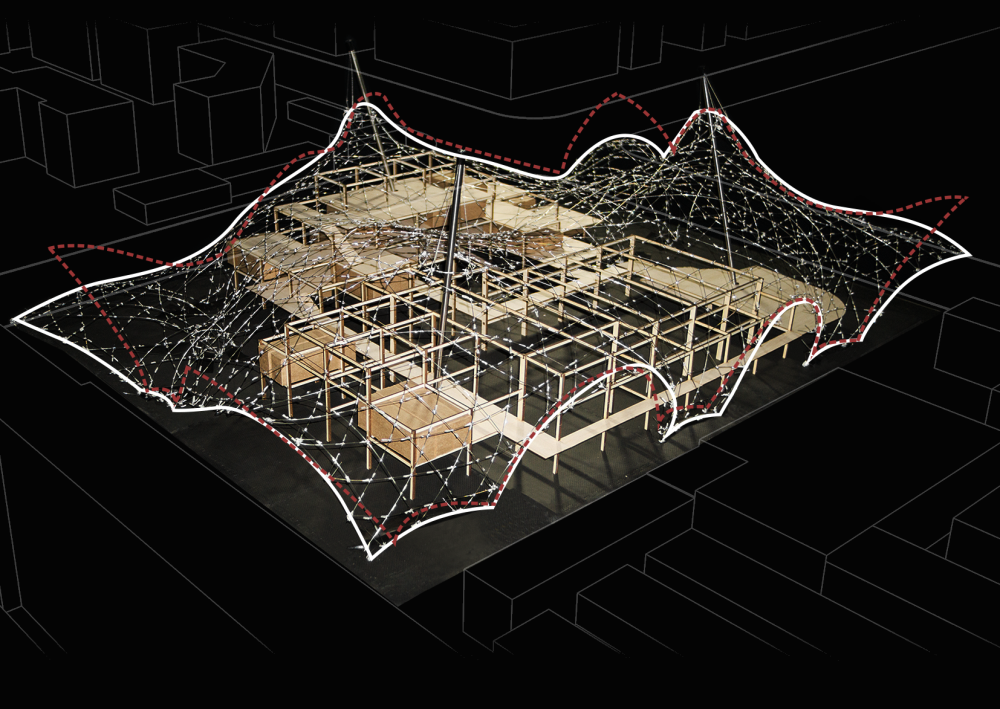
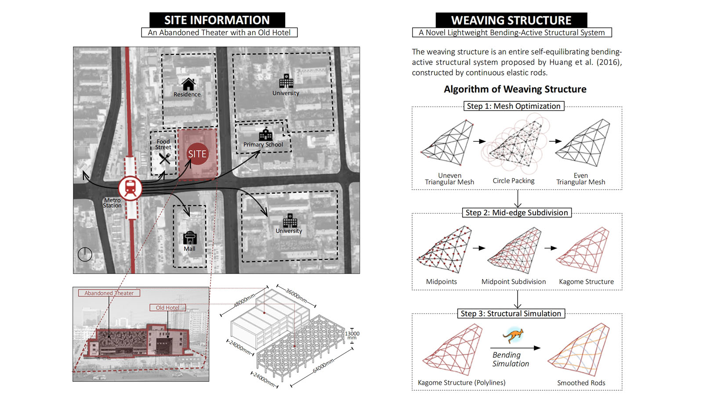
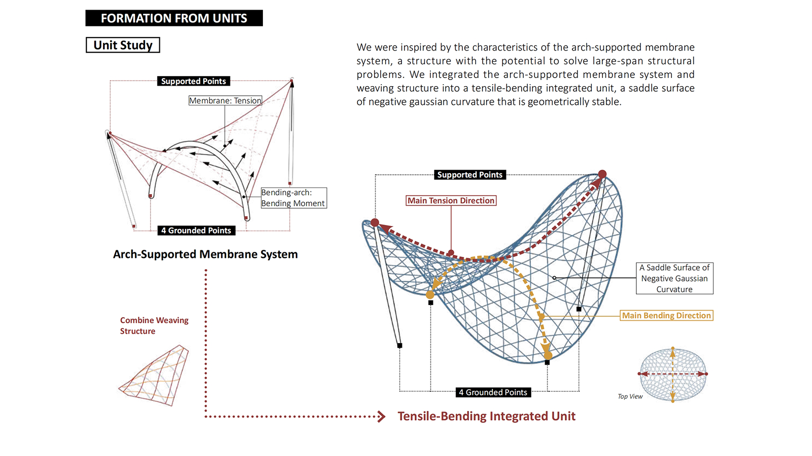
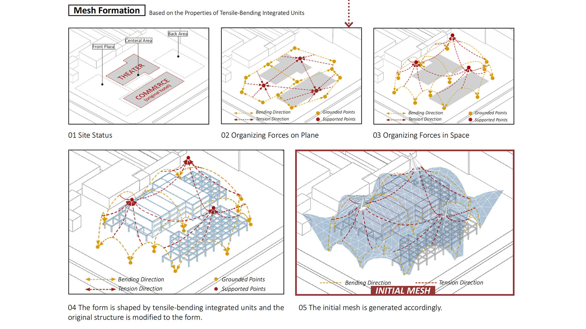
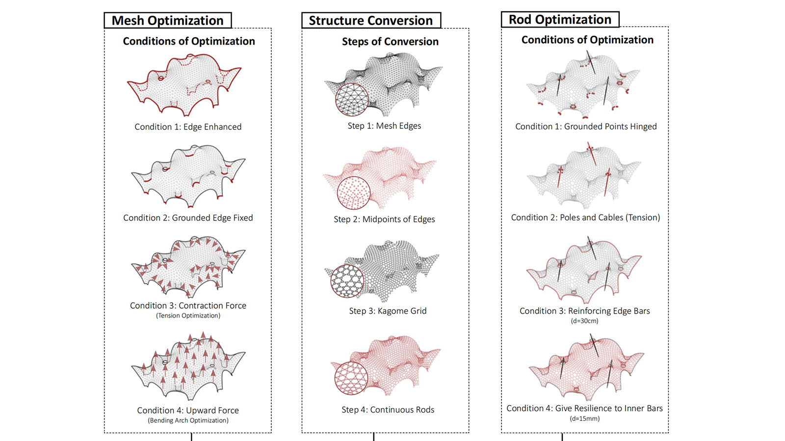
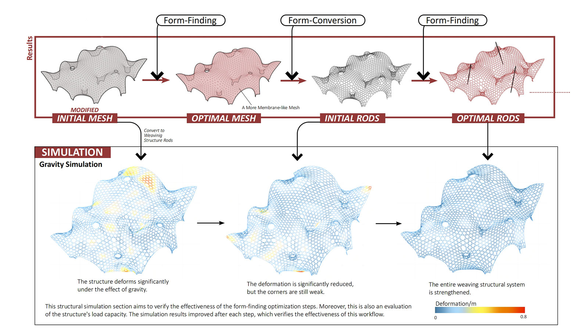
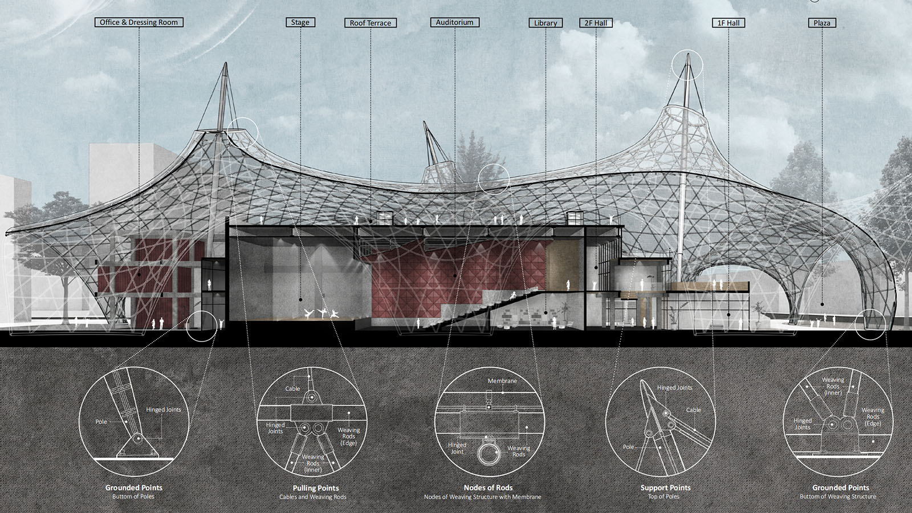
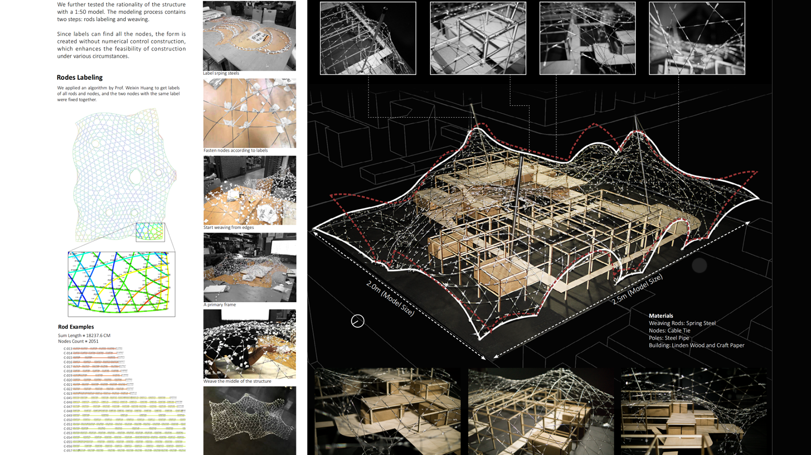
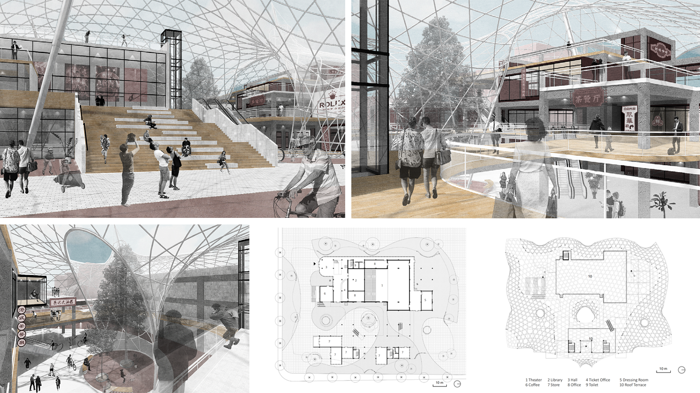

Weaving Structure
This project aims to apply weaving structure, a novel lightweight bending-active structural system, on the architectural scale. The design was based on an integrative approach and combined two techniques within the integrative concept for the structure’s generation: form-conversion and form-finding. An entire workflow containing four main steps is proposed to combine the two techniques: 1) mesh formation, 2) mesh optimization, 3) structure conversion, and 4) rod optimization. A structural simulation was performed before and after each optimization to verify the effectiveness of this workflow. The results of the gravity simulation showed that the structure was significantly strengthened through optimization.







